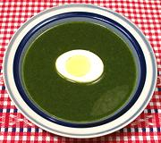

|
Nettle SoupSweden - Nässelsoppa | ||||
| Serves: Effort: Sched: DoAhead: |
4 soup ** 35 min Note-3 |
A light soup with delightful herbal flavor popular in Sweden, often served with a hard boiled or poached egg. It is a simple soup, so the quality of the beef stock is important, but it shouldn't be too strong. | |||
|
5 4 1 2 tt 1/4 2 2 |
oz c T T t T T |
Nettles (1) Beef Stock Chives Chervil (2) Salt Pepper Flour Butter |
The slight thickening with flour is necessary or the nettles all sink to the bottom. Prep - (15 min)
|